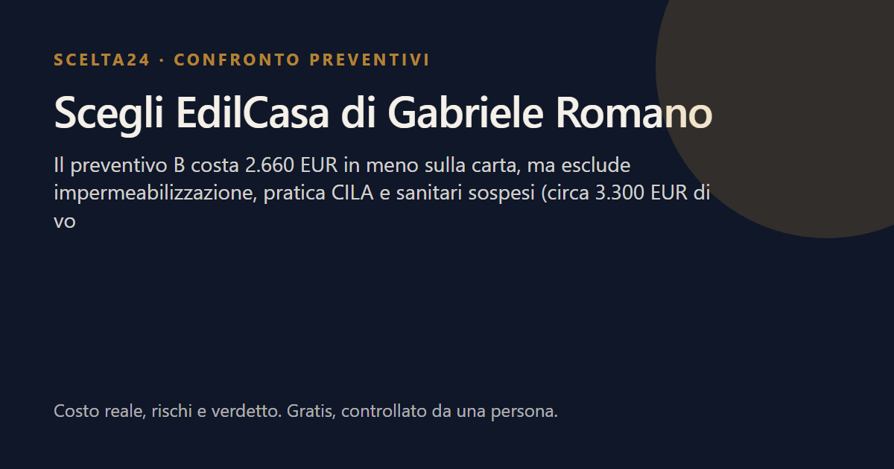
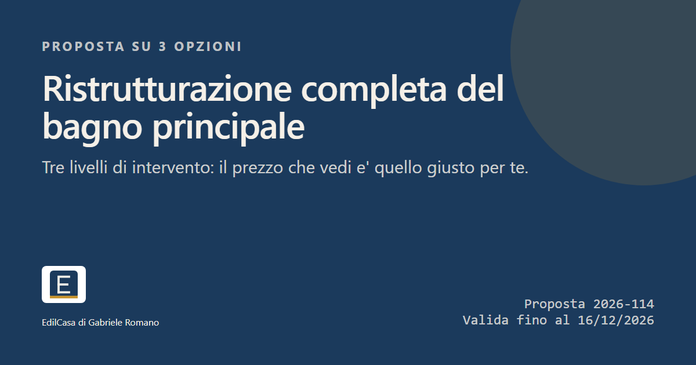
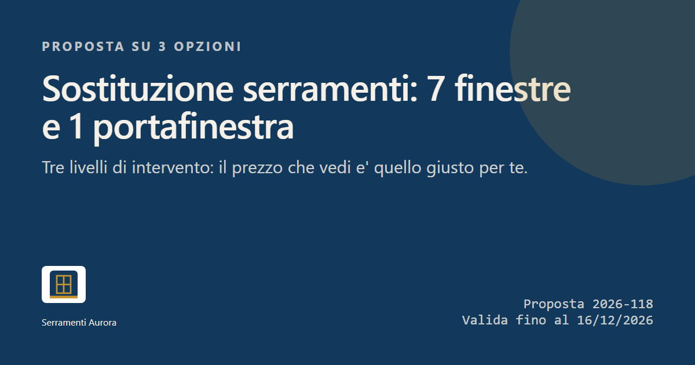

Confronto preventivi e contratti
Hai piu' preventivi sul tavolo? Ti diciamo quale conviene davvero.
Non basta il prezzo piu' basso: contano le voci mancanti, la caparra, i tempi, la garanzia e le detrazioni. Scelta24 confronta i tuoi preventivi riga per riga e ti da' un verdetto chiaro, con le domande da fare alle aziende.
Gratis. Nessuna registrazione. Il risultato e' controllato da una persona prima di arrivarti. I tuoi documenti non addestrano modelli.
Come funziona
Tre passi, dal PDF sul telefono alla decisione.
Mandi i preventivi o i contratti
Ci invii i PDF che hai ricevuto (due, tre o piu'). Puoi aggiungere una nota su cosa ti interessa: prezzo, tempi, qualita' o garanzie.
Normalizziamo e verifichiamo
Mettiamo ogni offerta sulla stessa tabella: prezzo dichiarato, IVA, costo reale, voci incluse e mancanti, caparra, tempi e garanzia. Usiamo una griglia di completezza per il tipo di lavoro.
Ricevi la scelta e le domande
Un verdetto in chiaro, i semafori di rischio e la lista di domande da inviare alle aziende. Il risultato viene controllato da una persona prima di essere inviato.
Perche' non basta chiedere a un'IA
Un'IA generica spesso risponde "dipende". Qui il confronto e' fatto per farti scegliere, non per farti riflettere.
Sappiamo cosa deve esserci
Per ogni tipo di lavoro esiste una checklist di voci obbligatorie. Se manca l'impermeabilizzazione o la pratica, te lo diciamo: e' li' che il preventivo "economico" diventa caro.
Prezzo dichiarato ≠ costo vero
Sommiamo voci mancanti, verifichiamo IVA e condizioni, segnaliamo caparre alte, tempi vaghi e garanzie ridotte. Il verdetto considera prezzo, rischi, qualita' e tempi.
Una persona controlla prima
Su clausole e numeri importanti non ci affidiamo a una risposta automatica: il risultato viene verificato prima di arrivarti. E i tuoi documenti restano riservati.
DATI DI ESEMPIO - AZIENDE INVENTATE
Esempio dal vivo
Questo confronto usa dati di esempio, inventati. Serve solo a farti capire come funziona: tabella, semafori e verdetto. Le aziende citate non esistono.

Bagno: preventivo piu' basso vs costo reale
Tabella riga per riga, semafori di rischio e verdetto: il piu' economico non vince.
Confronto preventivi — Ristrutturazione bagno completo | Scelta24
Tre livelli affiancati: Base, Consigliata, Completa.

EdilCasa di Gabriele Romano — Proposta 2026-114 | Ristrutturazione completa del bagno principale
Tre livelli affiancati: Base, Consigliata, Completa.

Serramenti Aurora — Proposta 2026-118 | Sostituzione serramenti: 7 finestre e 1 portafinestra
Tre livelli affiancati: Base, Consigliata, Completa.
Non siamo pubblicità per nessun produttore
Scelta24 sta dalla parte di chi riceve i preventivi, non di chi li emette.
Tu che devi scegliere
Hai ricevuto due o tre preventivi e non sai quale conviene davvero? Noi li confrontiamo riga per riga e ti diciamo quale scegliere.
Nessuna azienda sponsorizzata
Non promuoviamo nessun installatore, nessun marchio, nessun produttore. Gli esempi sono inventati e servono solo a mostrare il metodo.
Una persona verifica
Il verdetto non e' generato automaticamente: viene controllato da una persona prima di arrivarti. I tuoi documenti restano riservati.
Due modi per confrontare
Il verdetto sintetico e' gratis. L'analisi completa e' a pagamento perche' richiede lettura dei contratti e controllo umano.
Verdetto sintetico
Quale preventivo scegliere e perche', con il costo reale stimato. Nessuna registrazione, nessun documento pubblicato.
Analisi completa
Tabella riga per riga con voci mancanti, semafori di rischio (caparra, garanzia, tempi, detrazioni) e le domande scritte da inviare alle aziende. Per chi firma contratti di valore.
Fiducia e privacy
Il confronto riguarda documenti sensibili: trattiamo i dati con questo principio.
Nessun documento pubblico
I PDF che invii non finiscono in repository pubblici e non vengono pubblicati. Usiamo i dati solo per produrre il confronto.
Non addestrano modelli
I tuoi preventivi e contratti non vengono usati per addestrare modelli di intelligenza artificiale.
Controllato ed eliminato
Il verdetto e' controllato da una persona prima dell'invio. Dopo la consegna, i documenti vengono eliminati secondo la procedura concordata.
Sei un'azienda che emette preventivi?
Scelta24 e' un servizio di Preventivi24. Aiutiamo le aziende a presentare i preventivi in modo chiaro, su tre livelli, cosi' il cliente sceglie il valore e non solo il prezzo.
Domande frequenti
Come faccio a confrontare due o tre preventivi?
Mettili uno accanto all'altro sulla stessa tabella: prezzo dichiarato, IVA, cosa e' incluso, cosa manca, tempi, caparra e garanzia. Il preventivo piu' basso sulla carta spesso esclude voci che poi paghi a parte. Scelta24 fa questo confronto riga per riga e ti mostra il costo reale.
Cosa controllare in un preventivo di ristrutturazione o lavori in casa?
Controlla che ci siano demolizione e smaltimento, impermeabilizzazione, impianti con collaudo, materiali specificati, tempi scritti, garanzia e condizioni di pagamento. Se una voce e' vaga o manca, chiedila per iscritto prima di firmare.
Come si capisce qual e' il preventivo piu' conveniente davvero?
Non basta il prezzo: conta il costo reale. Aggiungi le voci mancanti, verifica IVA e detrazioni, guarda caparra, garanzia e tempi. Un preventivo piu' economico puo' costare di piu' se esclude lavori essenziali o scarica rischi su di te.
Chi gestisce la detrazione fiscale e la pratica CILA?
Dipende dal preventivo: alcuni la includono, altri la lasciano a tuo carico. Va scritto in modo chiaro perche' ha un costo e serve per la detrazione. Se non e' indicato, e' una domanda da fare all'azienda prima di scegliere.
I miei documenti sono al sicuro?
I preventivi e i contratti che ci invii servono solo per il confronto. Non finiscono in un repository pubblico, non vengono usati per addestrare modelli e vengono eliminati dopo la consegna. Il risultato viene controllato da una persona prima di arrivarti.